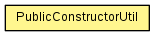

- Detail:
- Field |
- Constr |
- Method

-
-
Method Summary
-
Methods inherited from class java.lang.Object
clone, equals, finalize, getClass, hashCode, notify, notifyAll, toString, wait, wait, wait
- Detail:
- Field |
- Constr |
- Method
Copyright © 2012–2015 Trajano. All rights reserved.